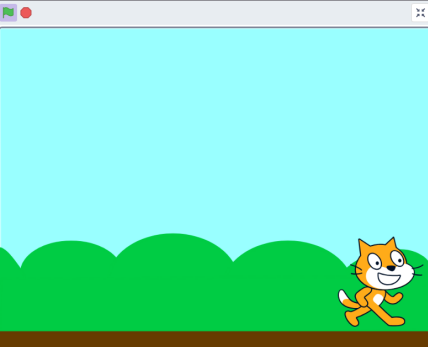
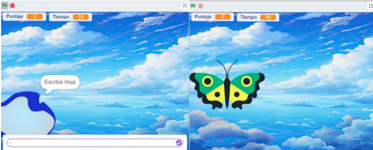
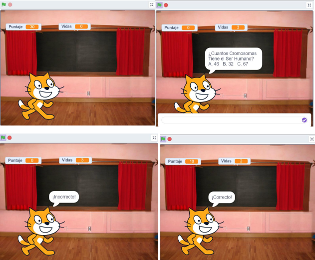
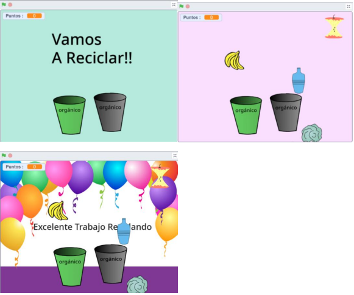

Fase 3: Programación Educativa con Scratch
¿Qué es Scratch?
Scratch es un lenguaje de programación visual desarrollado por el MIT Media Lab. Está diseñado principalmente para niños, jóvenes y personas que están iniciando en la programación.
Permite crear proyectos interactivos como:
- 🎮 Juegos
- 🎬 Animaciones
- 📖 Historias Digitales
- 🔬 Simulaciones
- 📊 Presentaciones interactivas
Su característica principal es que utiliza bloques gráficos que se arrastran y encajan entre sí, evitando errores de sintaxis y facilitando el aprendizaje lógico y creativo.
🔗 Conoce más en scratch.mit.edu
Interfaz de Scratch
🎭 Escenario
Espacio donde se ejecuta el proyecto y se visualizan las animaciones, personajes y acciones.
👾 Objetos o Sprites
Personajes o elementos que realizan acciones. Cada Sprite puede tener disfraces, sonidos y scripts.
🧩 Área de Bloques
Contiene los bloques de programación organizados por categorías y colores.
⚙️ Área de Programación
Espacio donde se unen los bloques para crear secuencias de instrucciones (scripts).
Bloques Principales
🔵 Movimiento
mover, girar, ir a posición🟣 Apariencia
decir, cambiar disfraz, mostrar/ocultar🔴 Sonido
reproducir sonido, cambiar volumen🟡 Eventos
al presionar bandera, al hacer clic🟠 Control
repetir, si/entonces, esperar🔵 Sensores
tocar objeto, preguntar, posición mouseUsos Educativos
- Aprendizaje de Programación: Introduce conceptos como secuencias, condicionales, bucles y variables.
- Pensamiento Lógico: Ayuda a resolver problemas mediante pasos organizados y algoritmos.
- Creatividad: Los estudiantes pueden diseñar historias, videojuegos y proyectos multimedia.
- Trabajo Colaborativo: Permite compartir proyectos en línea y aprender de otros usuarios.
- Aprendizaje Interdisciplinario: Se puede utilizar en matemáticas, ciencias, arte, lenguaje y música.
Proyectos Desarrollados
Ejercicios Básicos
1️⃣ Movimiento Continuo
Introducción a bucles y desplazamiento de sprites.

🎮 ¡Juega aquí mismo!
2️⃣ Ortografía
Lluvia de palabras con evaluación de respuestas.

🎮 ¡Pon a prueba tu ortografía!
3️⃣ Quiz
Trivia de ciencias con vidas y sistema de puntaje.

🎮 ¡Demuestra tus conocimientos!
🏆 Proyecto Final: Clasificación de Residuos
Descripción: Juego interactivo para enseñar a identificar residuos orgánicos e inorgánicos.

🎮 Juega Ahora:
🌍 Objetivo: Mueve la caneca correcta hacia cada objeto. ¡Suma puntos clasificando correctamente!
Mecánica: El jugador mueve la caneca correcta hacia cada objeto. Si es correcto, el objeto desaparece, suma punto y suena un sonido. Si es incorrecto, permanece visible.
Aprendizajes de programación: Eventos, condicionales, variables, bucles, clonación y detección de colisiones.
Conciencia ambiental: Enseña separación correcta de residuos y la importancia del reciclaje.